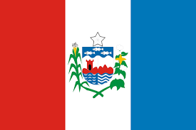

Atuação da ONU em Alagoas
A atuação da ONU em Alagoas é focada no desenvolvimento urbano sustentável através da parceria Visão Alagoas 2030, em colaboração com o Governo de Alagoas e o ONU-Habitat. A iniciativa inclui fortalecimento institucional, elaboração de relatórios sobre a Agenda 2030, mapeamento de áreas vulneráveis, capacitação de agentes para ações sociais como busca ativa, e desenvolvimento de estratégias para segurança alimentar e urbana.
